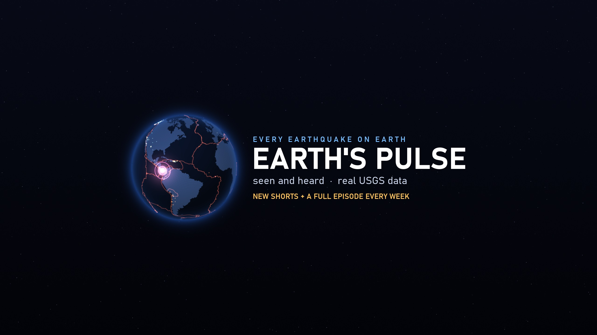
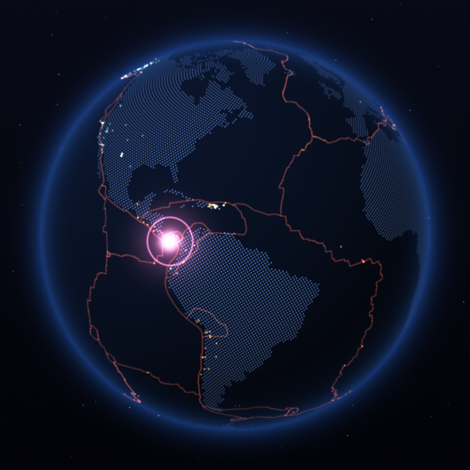

Earth's Pulse
Every earthquake on Earth, seen and heard. Earth's Pulse turns real seismic data from the U.S. Geological Survey into short visualisations: every flash on the globe is a real earthquake, and every quake plays a note. The bigger the quake, the deeper and louder it rings.
New Shorts and a full episode every week: a day, a week or a year of a region's earthquakes in under a minute, the week's biggest quakes counted down with decades of history, and the great earthquakes that shaped our planet, replayed quake by quake.
About the uploader app
"Earths Pulse Uploader" is a small private tool the channel owner runs on their own computer to publish these videos to the Earth's Pulse YouTube channel using YouTube API Services. It is not offered to the public. See the privacy policy and terms of service.
Data: USGS ANSS Comprehensive Catalog · Plate boundaries: P. Bird (2003) · Land: Natural Earth